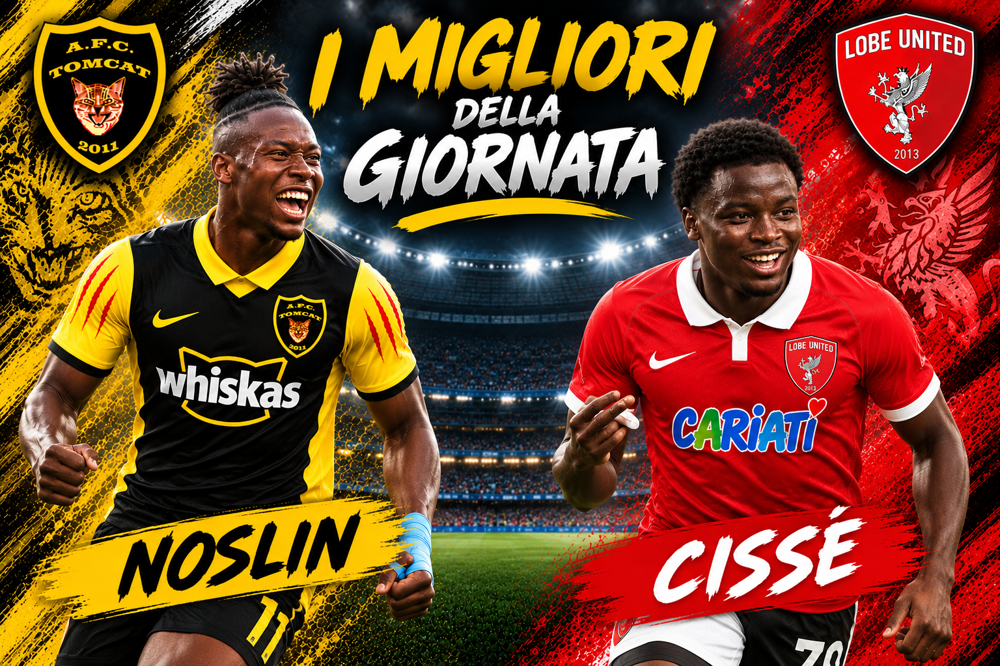

Noslin del Tomcat e Cissè del Lobe United accendono il settimo turno: due protagonisti, due maglie e una copertina tutta per loro.

SPARTAK, LA RIMONTA CHE FA TREMARE IL TAURINORUM
Sembrava una qualificazione già scritta. Il 5–1 incassato all'andata dal Taurinorum aveva lasciato allo Spartak Pisa soltanto una possibilità remota. E invece il ritorno è diventato una serata da ricordare: 4–1 per lo Spartak, un risultato clamoroso che però non basta. Il totale dice 6–5 per il Taurinorum, che raggiunge i quarti dopo aver rischiato di dilapidare un vantaggio enorme.
Per lo Spartak resta l'orgoglio di una risposta feroce e il rammarico di essersi fermato a una sola rete dal completare la rimonta. Per il Taurinorum, il sollievo di una qualificazione sofferta, molto più di quanto promettesse la gara d'andata.
LOBE, CHE RIBALTONE! CISSÈ CAMBIA TUTTO
La grande impresa degli ottavi porta la firma del Lobe United. Sconfitto 2–1 dai Wild Eagles all'andata, il Lobe risponde con un travolgente 4–1 nel ritorno e conquista i quarti con un complessivo 5–3.
L'uomo della svolta è Cissè: parte dalla panchina, entra in campo e segna due gol, trasformando una rimonta complicata in una festa. Una di quelle prestazioni che cambiano una partita e, forse, il cammino in coppa di un'intera squadra.
EVERTOR, COLPO IN CASA ZULU
Non è da meno l'Evertor, che dopo il 2–2 dell'andata va a vincere 3–2 sul campo della Zuluzebra. Una partita combattutissima, risolta con carattere, che consegna all'Evertor la qualificazione per 5–4 nel doppio confronto.
Avanzano anche il Tomcat, che difende il 3–0 iniziale nonostante il 2–1 subito dal Real Doratom; la Dinamo, capace di pareggiare 2–2 in casa della Vaientus dopo il 3–2 dell'andata; e il Castel di Iemma, che conserva il vantaggio del 3–1 grazie allo 0–0 sul campo del Monaco di Barriera.
Ai quarti le sei qualificate si uniranno a Profonda Aurora e Intertor, già ammesse direttamente al turno successivo.